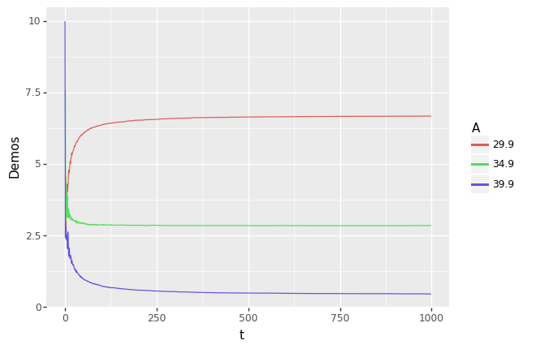

Thompson sampling
import random
from typing import NamedTuple, List, Callable, Dict, Any, Tuple
import time
import pandas as pd
from dynpric.seller import Seller
from dynpric.market import Market, Price, Quantity
from dynpric.priors import BetaPrior
from dynpric.simulation_engine import simulate, trial_factory
class PriceLevel(NamedTuple):
"""
Container of the information that characterizes the state of a price level
"""
price: Price
true_prob: float
PriceLevels = List[PriceLevel]
class Belief(NamedTuple):
price: Price
prior: BetaPrior
Beliefs = List[Belief]
price_levels = [
PriceLevel(29.9, 0.6),
PriceLevel(34.9, 0.4),
PriceLevel(39.9, 0.25),
]
def beliefs() -> Beliefs:
"""
Reset the state of beliefs when initializing a new simulation trial
"""
return [
Belief(29.9, BetaPrior(1, 1)),
Belief(34.9, BetaPrior(1, 1)),
Belief(39.9, BetaPrior(1, 1)),
]
def greedy(b: Belief) -> float:
return b.prior.expected_value # type: ignore
def thompson(b: Belief) -> float:
return b.prior.sample() # type: ignore
class BinomialSeller(Seller):
def __init__(self, beliefs: Beliefs, strategy: Callable[[Belief], float]) -> None:
self.beliefs = beliefs
self.strategy = strategy
def choose_price(self) -> Price:
profit = [belief.price * self.strategy(belief) for belief in self.beliefs]
idx = profit.index(max(profit))
return self.beliefs[idx].price
def observe_demand(self, q: Quantity, p: Price) -> None:
# update beliefs with observerd demand
belief = next(belief for belief in self.beliefs if belief.price == p)
belief.prior.update(q)
class BinomialMarket(Market):
def __init__(self, price_levels: PriceLevels) -> None:
self.price_levels = price_levels
def _simulate_buying_decision(self, price_level: PriceLevel) -> Quantity:
if random.random() > price_level.true_prob:
return 0
return 1
def realize_demand(self, p: Price) -> Quantity:
for pl in self.price_levels:
if pl.price == p:
return self._simulate_buying_decision(pl)
else:
raise ValueError(f"Price {p} is not an allowed price.")
def initialize_trial() -> Tuple[Market, Seller]:
return (
BinomialMarket(price_levels),
BinomialSeller(beliefs(), strategy=greedy),
)
def record_state(
t: int, market: Market, seller: Seller, p: Price, q: Quantity
) -> Dict[str, Any]:
return {"t": t, "price": p}
start = time.perf_counter()
simulation = simulate(
S=10000, T=1000, trial_runner=trial_factory(initialize_trial, record_state), execution_mode='sequential'
)
end = time.perf_counter()
print(f"It took {end - start}")
Starting simulation...
Finished trial number 0
Finished trial number 1000
Finished trial number 2000
Finished trial number 3000
Finished trial number 4000
Finished trial number 5000
Finished trial number 6000
Finished trial number 7000
Finished trial number 8000
Finished trial number 9000
It took 43.300607673
def flatten_results(simulation: List[Dict]) -> pd.DataFrame:
"""
Creates a dataframe out of the results of a simulation.
The expected structure of the simulation object:
[
{
"s": 0,
"periods": [
{'t': 0, 'price': 29.99},
{'t': 1, 'price': 34.99},
...
]
},
...
]
"""
flat = []
for trial in simulation:
for period in trial["periods"]:
flat.append({"s": trial["s"], **period})
return pd.DataFrame(flat)
results = flatten_results(simulation)
counts_per_step = results.groupby(["t", "price"]).size().reset_index(name="n")
counts_per_step["pp"] = counts_per_step["n"] / max(counts_per_step["t"] + 1)
from plotnine import ggplot, aes, geom_line, labs
plot = (
ggplot(counts_per_step, aes("t", "pp", color="factor(price)"))
+ geom_line()
+ labs(y="Demos", color="A")
)
plot

<ggplot: (285468880)>